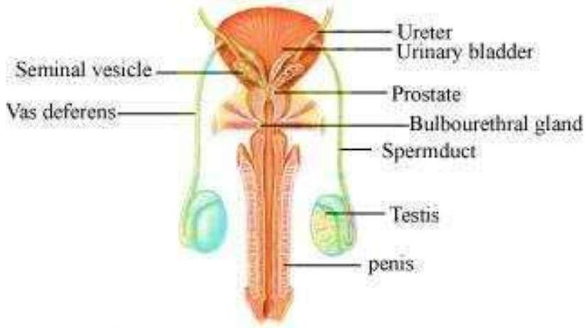
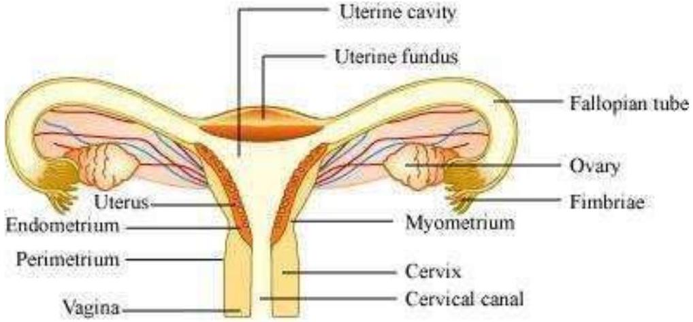
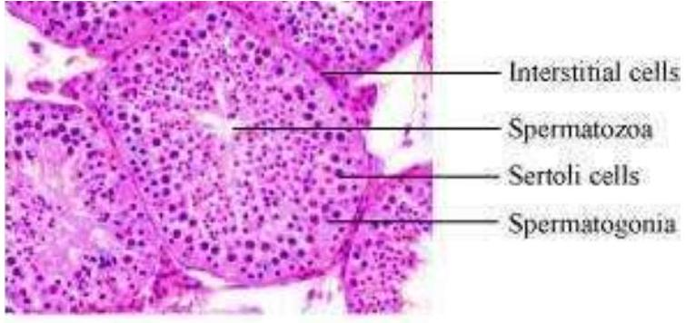
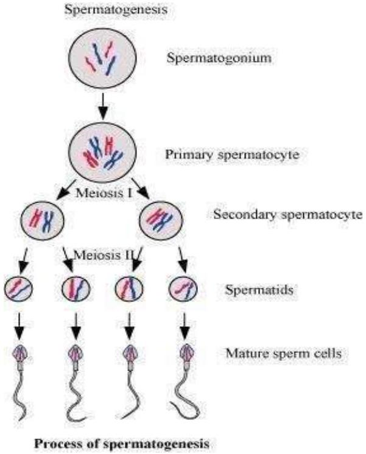
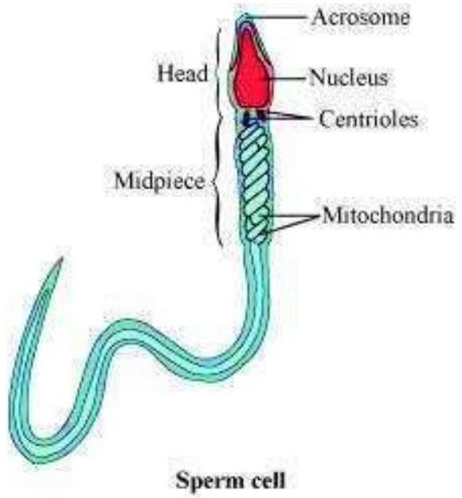
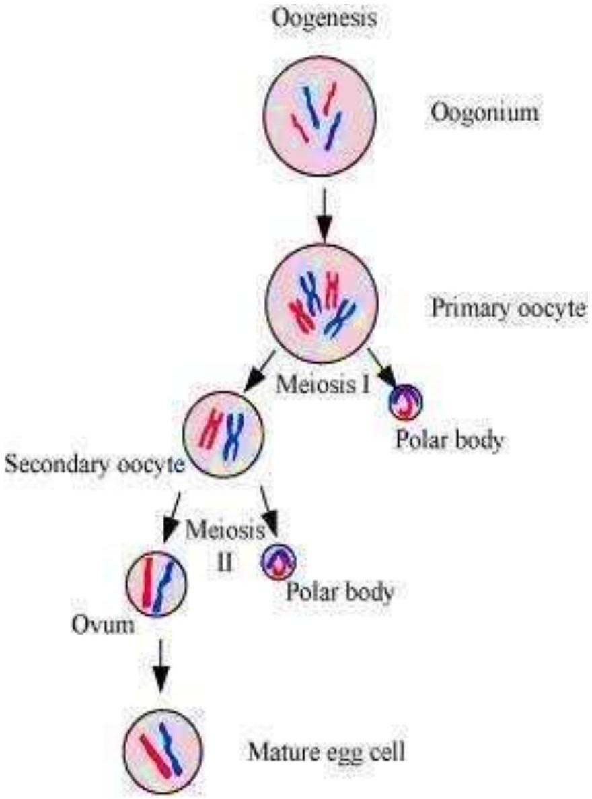
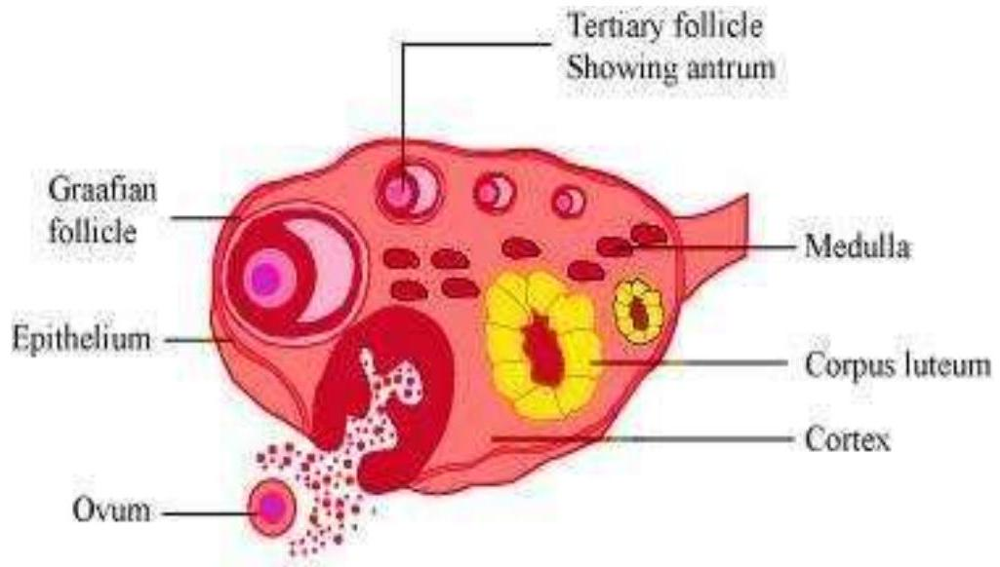
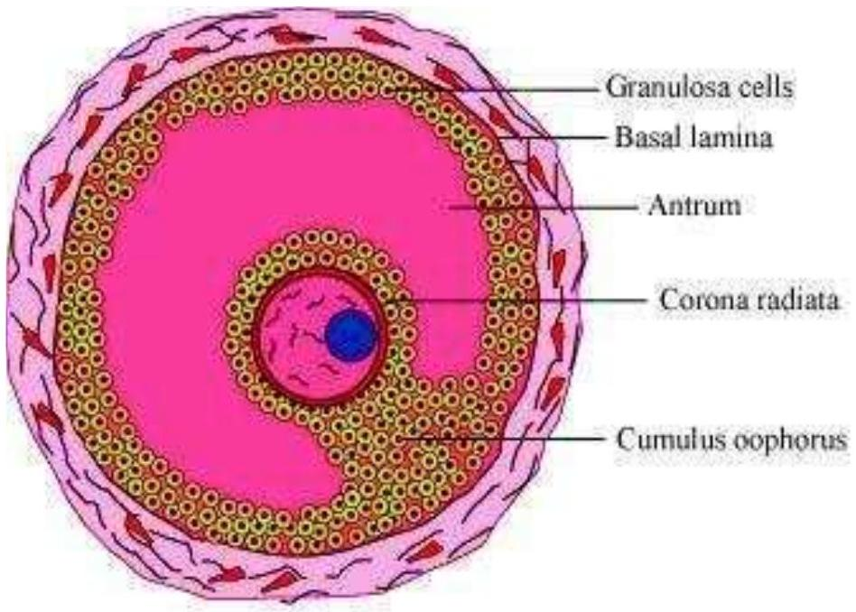

Fill in the blanks:
Humans reproduce ____ (asexually/sexually)
Humans are ____ (oviparous, viviparous, ovoviviparous)
Fertilisation is ____ in humans (external/internal)
Male and female gametes are ____ (diploid/haploid)
Zygote is ____ (diploid/haploid)
The process of release of ovum from a mature follicle is called ____
Ovulation is induced by a hormone called ____
The fusion of male and female gametes is called ____
Fertilisation takes place in ____
Zygote divides to form ____ which is implanted in uterus.
The structure which provides vascular connection between foetus and uterus is called ____

Draw a labelled diagram of male reproductive system.

Draw a labelled diagram of female reproductive system.
Write two major functions each of testis and ovary.

Describe the structure of a seminiferous tubule.

What is spermatogenesis? Briefly describe the process of spermatogenesis.
Name the hormones involved in regulation of spermatogenesis.
Define spermiogenesis and spermiation.

Draw a labelled diagram of sperm.
What are the major components of seminal plasma?
What are the major functions of male accessory ducts and glands?

What is oogenesis? Give a brief account of oogenesis.

Draw a labelled diagram of a section through ovary.

Draw a labelled diagram of a Graafian follicle?
Name the functions of the following:
Corpus luteum
Endometrium
Acrosome
Sperm tail
Fimbriae
Identify True/False statements.
Correct each false statement to make it true.
Androgens are produced by Sertoli cells. (True/False)
Spermatozoa get nutrition from Sertoli cells. (True/False)
Leydig cells are found in ovary. (True/False)
Leydig cells synthesise androgens. (True/False)
Oogenesis takes place in corpus luteum. (True/False)
Menstrual cycle ceases during pregnancy. (True/False)
Presence or absence of hymen is not a reliable indicator of virginity or sexual experience. (True/False)
What is menstrual cycle? Which hormones regulate menstrual cycle?
What is parturition? Which hormones are involved in induction of parturition?
In our society the women are often blamed for giving birth to daughters.
Can you explain why this is not correct?
How many eggs are released by a human ovary in a month? How many eggs do you think would have been released if the mother gave birth to identical twins? Would your answer change if the twins born were fraternal?
How many eggs do you think were released by the ovary of a female dog which gave birth to 6 puppies?